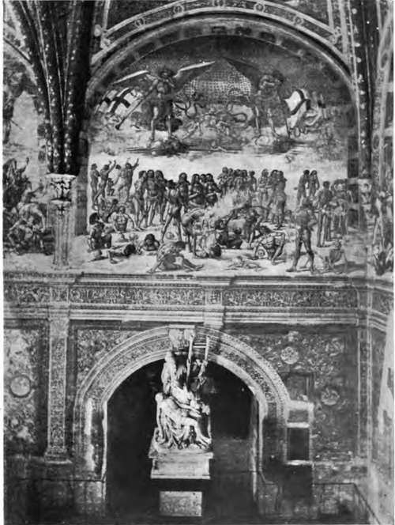

Keim's Process Foe Wall Painting
Description
This section is from the book "Mural Painting", by F. Hamilton Jackson. Also available from Amazon: Mural Painting: -1904.
Keim's Process Foe Wall Painting
The failure of the frescoes which were executed in Germany (on external walls particularly) at the time of the revival of fresco painting, of which the north and east sides of the new Pinacothek at Munich showed such deplorable examples, the hail and rain having destroyed the protecting covering of crystallic carbonate of lime and washed away the colour from the wall beneath, induced certain of the German chemists to search for a mode of wall-painting which might defy the elements and show for centuries the creations of the artist just as they left his hand. The intention was laudable, and success appears to have attended the attempt; and although the difficulty occurs to one that if the decoration is in harmony with the building when it is new, and remains unaltered, it will become more and more out of harmony as years go by, and the unprotected portions take on the lovely tints which nothing will give but the lapse of years; while on the other hand, if this is allowed for in the scheme of coloration, the want of harmony between the decoration and its surroundings will strike one at once; it is scarcely to be expected that the artist, who naturally thinks his picture the most important part of the fa9ade, or the chemist, who glories in the success of his devices, will hold the objection of any importance.
THE RESURRECTION.
Fresco by Luca Signorelli, in the Cappella Kuova, Orvieto Cathedral.
The first of these processes was the water-glass or silicate of potash process invented by Dr. Johann N. von Fuchs, who called it stereochromy, and published a pamphlet explanatory of the process, which was translated into English by direction of the Prince Consort, who was always ready to further any effort in connection with art. The best known examples executed in England by this means are Maclise's two large paintings in the Houses of Parliament, and Herbert's " Moses99 in the Peers' Robing-Room in the same building. Maclise went over to Germany to make investigations, and it was upon his information that Herbert worked.
The plaster was allowed to become quite dry before being worked on, and the painting was executed with pure distilled water. Maclise said that he painted direct on to the wall from models, sailors, marines, guns, tackle, ropes, blocks, etc., and that the painting was nearly indelible before the operation of fixing, from the colours becoming absorbed. The pigments used were the same as in fresco painting, except that the lime white was replaced by zinc white. The under coat of plaster was made of two parts sharp sand, two parts fine sand, and one part of slaked lime in fine powder. The upper coat on which the painting was executed was one-tenth to one-eighth of an inch thick, and was made of three parts fine sand and one part slaked lime. The surface of the plaster may be made of any roughness desired—Kaulbach preferred it as rough as a rasp—and the final preparation of the surface is made by sweeping off the loose particles of sand and moistening it with a saturated solution of carbonate of ammonia before commencing to paint. The next day, when the portion painted has dried, the water-glass is sprayed over it with a syringe, though Maclise used to apply it with a large flat water-colour brush. He used it "two parts water and one of the concentrated liquor imported from Berlin" and applied it freely twice. The water-glass was composed of powdered quartz boiled in purified potass or soda, and Dr. Pettenkofer said that the potass solution was to be preferred.
This process showed certain disadvantages which other German chemists set to work to remove, seeking perfect permanency and believing that the only sure guarantee for the permanence of any painting was the thoroughly scientific observance of and adherence to the laws of chemistry. "Unless the painting is executed under conditions which can be proved to comply with the demands of chemical laws, its permanence is a mere matter of haphazard experiment and a perfectly open question".
A paper was read by the Rev. J. A. Rivington on October 15th, 1884, at the Society of Arts, upon the process as improved by Herr Adolf Keim, and a description is given in Professor Church's Chemistry of Paints and Painting; while the late Sir Roberts-Austen, cb., also read a paper on the latest development of the process as used by Mrs. Lea Merritt in Mr. Harrison Townsend's pretty little church at Wonersh, near Guildford, on December 6th, 1895* and from these various authoritative sources the following account is put together.
The preparation of the wall is a most elaborate and tedious process. Any damp bricks, over-burnt bricks, or decaying wood must be cut out of the wall and replaced with sound material. If there is any stucco already upon it it must be cleared off and the joints raked out to about the depth of three-quarters of an inch. Upon this surface a thin squirting is cast, composed of coarse quartz sand, infusorial earth, and pow* dered marble, four parts of this mixture to one part of quicklime slaked with distilled water. The object of this is to insure adhesion to the wall. Then follows a coat of mortar of ordinary consistency to fill up all inequalities. This is made, according to Sir Roberts-Austen, of pure lime, which has been slaked for some years, one part, four parts washed and dried sand, and one-eighth part of Keim's rough cast extract, the lime being first well stirred in twice its bulk of distilled or filtered rain-water, passed through a fine sieve, and then mixed with the sand. The wall must be carefully dusted and made very wet; when it has sucked in the water, very thin mortar is thrown from the trowel, and before this has quite dried more cast, so as to make the surface quite even. It should not be smoothed with the trowel, but great care must be taken to get the surface even, because otherwise the painting ground cannot be of equal thickness all over, which would affect the fixing of the colours. This mortar must not dry too suddenly or it will crack, and in very dry, hot weather it should be sprinkled with water. If cracks appear they must be carefully filled*
Continue to: